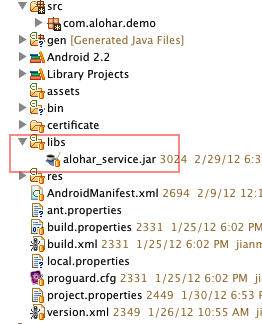
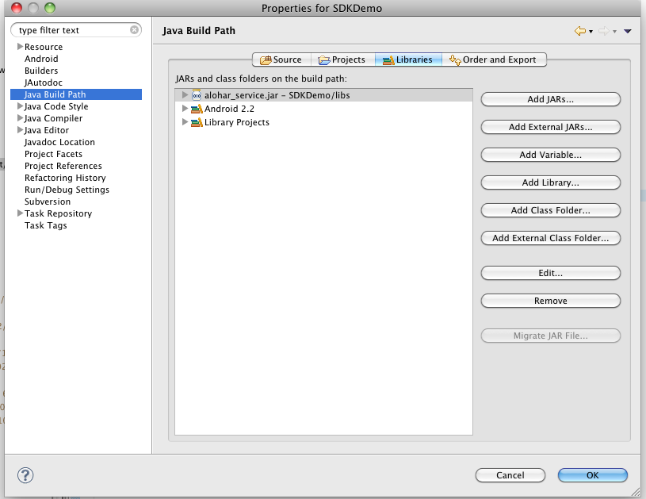

Alohar Android SDK Tutorial
v0.5
This document guides you through how to use the Alohar SDK for Android. We will walk through the key steps to building a Android app using Alohar SDK.
Getting Started
Register Your Android App with Alohar
Log into the Alohar developer site to get your App ID and API Key. If you do not currently have a developer account, please signup now and create one.
Download and Install the Android SDK
- Install Eclipse if you don't have it already.
- Install Android SDK & the Eclipse Plugin
- For Emulator testing, create Virtual devices by going to Eclipse->Window->Android SDK and AVD Manager->Virtual devices
Prepare your project
- Download Alohar Android SDK for Your App from developer site.
- Add reference to the Alohar SDK
Copy alohar_service.jar to the project's libs folder

If you use Eclipse, add the library to the project:

If you are using ant, you can use the following command to restore to use Android's build-in rules. You only need to put the alohar_service.jar in the libs folder.
android update project --name YourProjectName --target 8 --path YourProjectPath- Setup Your Project's Settings
Alohar SDK requires minimal Android API level 8 and the following permissions to function. Add these permissions to your project’s manifest file (AndroidManifest.xml):
<!-- permissions for the Alohar SDK -->
<uses-permission android:name="android.permission.INTERNET" />
<uses-permission android:name="android.permission.ACCESS_FINE_LOCATION" />
<uses-permission android:name="android.permission.READ_PHONE_STATE" />
<uses-permission android:name="android.permission.ACCESS_WIFI_STATE" />
<uses-permission android:name="android.permission.WAKE_LOCK"/>
<uses-permission android:name="android.permission.ACCESS_COARSE_LOCATION"/>
<uses-permission android:name="android.permission.RECEIVE_BOOT_COMPLETED"/>
<uses-permission android:name="android.permission.ACCESS_NETWORK_STATE"/>Alohar SDK has two daemon services running in the background.
Alohar platform performs the best if the services are running all the time. To enable auto-start after reboot, you can register a broadcast receiver in the manifest file as well:
<!-- services -->
<service android:enabled="true" android:name="com.alohar.core.ALCoreService" />
<service android:enabled="true" android:name="com.alohar.core.ALMasterService" />
<receiver android:name="com.alohar.core.ALBroadcastReceiver" android:enabled="true">
<intent-filter>
<action android:name="android.intent.action.BOOT_COMPLETED"></action>
</intent-filter>
</receiver>Now, try to clean and compile your project, if there is no error, you are good to go. if you are using ant, try ant clean followed by ant release.
How to use the SDK
For complete details about the Alohar Android SDK, please refer to the SDK reference document.
Initialize Alohar Instance
An Alohar instance is required to perform all Alohar SDK operations.
Alohar.init(getApplication());
Alohar mAlohar = Alohar.getInstance();Register A New User
If you haven’t, you need to register a new user as the following to perform any place or motion operations:
mAlohar.register(APP_ID, API_KEY, new ALEventListener(){
@Override
public void handleEvent(ALEvents event, Object data) {
if (event == ALEvents.REGISTRATION_CALLBACK) {
if (data instanceof String) {
uid = (String)data;
// Save UID for future use
}
} else if (event == ALEvents.GENERAL_ERROR_CALLBACK
|| event == ALEvents.SERVER_ERROR_CALLBACK) {
// Fail to register or authenticate
}
}
});Once you get the UID for this user, save the UID in your app or in your server system. Next time you run the app, you use the following method to authenticate the UID.
Authenticate An Existing User
If you already have an existing user, with the UID obtained from Alohar.register(), use the following sample code to authenticate the user:
mAlohar.authenticate(uid, APP_ID, API_KEY, new ALEventListener(){
@Override
public void handleEvent(ALEvents event, Object data) {
if (event == ALEvents.AUTHENTICATE_CALLBACK) {
if (data instanceof String) {
uid = (String)data;
// Save UID for future use
}
} else if (event == ALEvents.GENERAL_ERROR_CALLBACK
|| event == ALEvents.SERVER_ERROR_CALLBACK) {
// Fail to register or authenticate
}
}
});All the following operations are for the authenticated UID.
Start/Stop Service
You use Alohar.startService() to start the background service, and use Alohar.stopService() to stop the background service.
mAlohar.startService(); //start service
mAlohar.stopService(); //stop serviceManage Places and User Stays
Use the ALPlaceManager instance to perform place and userstay-related operations.
// Get the ALPlaceManager to access user stays and places
ALPlaceManager mPlaceManager = mAlohar.getPlaceManager();Information Retrieval and Search
Once you have the ALPlaceManager instance, you can perform queries on userstays, current-location, or search for places base on some criteria.
// Get the last known local user stay
UserStay lastKnownStay = mPlaceManager.getLastKnownStay();
// Get the current location
ALLocation curLoc = mPlaceManager.getCurrentLocation();
// Search places based on some criteria
mPlaceManager.searchPlaces(0, System.currentTimeMillis()/ 1000, ".*",
0, 10, new ALEventListener() {
@Override
public void handleEvent(ALEvents event, Object data) {
if (event == ALEvents.PLACES_QUERY_CALLBACK) {
places = (ArrayList<PlaceProfile>)data;
// Post process the places
} else if (event == ALEvents.GENERAL_ERROR_CALLBACK
|| event == ALEvents.SERVER_ERROR_CALLBACK) {
// Error handling
}
}
});
// Search user stays
private double latitudeE6 = 37.432110;
private double longitudeE6 = -122.103274;
mPlaceManager.searchUserStays(latitude, longitude, 500, 0, System.currentTimeMillis()/1000,
true, 100, new ALEventListener() {
@Override
public void handleEvent(ALEvents event, Object data) {
if (event == ALEvents.USERSTAYS_QUERY_CALLBACK) {
userStays = (ArrayList<UserStay>)data;
// Post process the userstays
} else if (event == ALEvents.GENERAL_ERROR_CALLBACK
|| event == ALEvents.SERVER_ERROR_CALLBACK) {
// Error handling
}
}
});
// Get user stays of a given place
Place place = ...
mPlaceManager.getUserStays(place, new ALEventListener() {
@Override
public void handleEvent(ALEvents event, Object data) {
if (event == ALEvents.USERSTATS_OF_A_PLACE_CALLBACK) {
userStays = (ArrayList<UserStay>)data;
// Post process userstays
} else if (event == ALEvents.GENERAL_ERROR_CALLBACK
|| event == ALEvents.SERVER_ERROR_CALLBACK) {
// Error handling
}
}
});Real Time Callbacks
You register the following event listener to get callbacks when the user arrives at a new place, or the place name is detected, or the user departs from a place.
// Listen for place events
mPlaceManager.registerPlaceEventListener(new ALPlaceEventListener() {
// This is called when the user arrives at a new place
@Override
public void onArrival(double latitude, double longitude) {
// Process the arrival event
}
// This is called when the user departs from a place
@Override
public void onDeparture(double latitude, double longitude) {
// Process the departure event
}
// This is called when the system detects the name of the place the user stays at
// or there is some significant attribute change of the userstay.
@Override
public void onUserStayChanged(UserStay newUserStay){
// Process the userstay change.
}
});Typically, shortly after the user arrives at a place, the onArrival() method is called. Then when the name of the place is detected, the onUserStayChanged() method is called, and finally after the user departs from a place, the onDeparture() method is called.
Manage Motion State
You use ALMotionManager to perform all motion-state-related options.
// Get MotionManager to access motion state information
ALMotionManager mMotionManager = mAlohar.getMotionManager();
Motion State Information Retrieval
// Get current motion state
MotionState currentState = mMotionManager.getCurrentMotionState()
// Check whether user is not moving
boolean stationary = mMotionManager.isStationary()
// Check whether user is on the road
boolean onTheRoad = mMotionManager.isOnCommute()Real Time Callbacks
You register the following event listener to get callbacks when the user’s motion state is changed.
//listen motion events
mMotionManager.registerMotionListener(new ALMotionListener(){
@Override
public void onMotionStateChanged(MotionState oldState, MotionState newState) {
//post process
}
});Trouble Shooting
Contact us: developer@alohar.com
Sample Apps
Download the Alohar Android Demo app here: SDKDemo
Download the Alohar showcase app Placeme from the android market.